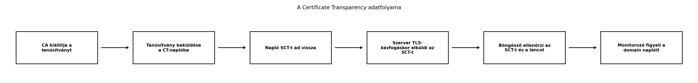

A Tanúsítványlánc, hitelesítésszolgáltatók és visszavonás alfejezetben láttuk, hogy a böngészőnk egy tanúsítványt akkor fogad el, ha ahhoz létezik egy olyan lánc, amely egy beépített gyökér-hitelesítésszolgáltatóhoz (CA) vezet. Ebből azonban egy kényelmetlen következmény adódik: a Web PKI modelljében bármely megbízható CA bármely domain névre bocsáthat ki tanúsítványt. A böngészőnkben több száz gyökér-CA van, és ezeket a gyökereket sok országban, sokféle joghatóság alatt működő szervezetek birtokolják. Ha közülük egyetlen egyet feltörnek, megvesztegetnek, vagy egyszerűen hibázik, a támadó a mi bankunk, levelezőnk vagy közösségi oldalunk nevére is érvényes tanúsítványt kaphat.
Ez nem elméleti aggodalom. 2011 nyarán a holland
DigiNotar hitelesítésszolgáltatót feltörték. A támadók
több száz hamis tanúsítványt állítottak ki – többek között a
*.google.com névre is. A hamis tanúsítványokat elsősorban
iráni felhasználók elleni közbeékelődéses (MITM) támadásra használták: a
támadó a Google nevében mutatkozott be, és a böngészők boldogan
elfogadták a kapcsolatot, mert a tanúsítványlánc egy megbízható
gyökérhez vezetett. A DigiNotar csődbe ment, a gyökerét visszavonták, de
a kár már megtörtént. Az eset rávilágított a Web PKI alapvető
strukturális problémájára: a rendszer nem észleli
automatikusan, ha egy CA jogosulatlanul állít ki
tanúsítványt.
Ebben az alfejezetben azt a kérdést járjuk körül, hogyan lehet ezt a bizalmi problémát legalább részben orvosolni úgy, hogy közben ne kelljen lecserélni a teljes tanúsítvány-infrastruktúrát. A válasz a Certificate Transparency (CT): nyilvános, csak hozzáfűzhető (append-only) naplók, amelyekbe minden kiadott tanúsítványt be kell jegyezni, és amelyeket bárki ellenőrizhet.
Képzeljük el a következő analógiát. Egy városban sok közjegyző adhat ki tulajdoni lapokat, és a bíróság mindegyik közjegyző pecsétjét elfogadja. A probléma: ha egy közjegyző korrupt, akkor csendben kiállíthat egy hamis tulajdoni lapot a szomszéd házáról, és azt a bíróság érvényesnek fogadja el.
A CT megoldása: minden kiállított tulajdoni lapról kötelező egy nyilvános, sorszámozott naplóba bejegyzést készíteni. A napló olyan, mint egy lánc: minden új bejegyzés az előzőek lenyomatát is tartalmazza, ezért utólag nem lehet beilleszteni vagy törölni bejegyzést anélkül, hogy az egész lánc megváltozna. Ráadásul a napló bárki számára olvasható, és a tulajdonos rendszeresen átnézi: „szerepelek-e benne olyan bejegyzés, amit én nem kértem?”. Ha igen, azonnal riaszt, és a hamis tulajdoni lapot visszavonatja.
A CT ezt valósítja meg kriptográfiai eszközökkel: a napló egy Merkle-fa, a bejegyzés igazolása egy Merkle-bizonyítás, a riasztás pedig a monitorozás.
Definíció (CT-napló). A Certificate Transparency egy olyan nyilvános, elosztott infrastruktúra, amelyben speciális szerverek, az ún. naplók (logs) csak hozzáfűzhető (append-only) módon tárolják a hozzájuk benyújtott tanúsítványokat. A napló minden új tanúsítványt beilleszt egy Merkle-fába, és a fa gyökerének lenyomatát rendszeresen publikálja, aláírja, és más naplókkal, illetve auditorokkal ellenőrizteti.
Definíció (SCT – Signed Certificate Timestamp). Amikor egy CA vagy domain-tulajdonos beküld egy tanúsítványt a CT-naplóba, a napló visszaad egy aláírt időbélyeget, az SCT-t (aláírt tanúsítvány-időbélyeg). Az SCT azt igazolja, hogy a napló a tanúsítványt egy adott időpontban bejegyezte, és vállalja, hogy a tanúsítvány egy meghatározott időn belül (általában 24 órán belül) bekerül a Merkle-fába. A TLS-kézfogás során a szerver az SCT-ket a tanúsítvánnyal együtt elküldi, a böngésző pedig ellenőrzi azok érvényességét.
A CT ökoszisztéma három fő szereplőből áll:
Alkalmazás. A Chrome böngésző 2018 óta megköveteli, hogy minden új, nyilvános CA-tól származó tanúsítvány rendelkezzen érvényes SCT-vel; enélkül a tanúsítványt megbízhatatlannak jelöli. A Safari hasonló követelményt vezetett be. Ez azt jelenti, hogy a gyakorlatban minden weboldal-tanúsítványt be kell jegyezni legalább egy, de általában több CT-naplóba.
A CT-napló szíve egy Merkle-fa (hash-fa). A Merkle-fa egy bináris fa, amelynek levelei a tanúsítványok lenyomatai, minden belső csúcsa pedig a két gyereke lenyomatának a hash-e. A fa gyökere egyetlen hash-érték, amely kriptográfiailag köti az összes levelet: ha bármely levelet megváltoztatjuk, a gyökér is megváltozik.
A CT (RFC 6962) a leveleket a naplóba kerülés sorrendjében tárolja; a
fa csak hozzáfűzhető (append-only), és a hash-eléskor a levelek elé
0x00, a belső csúcsok elé 0x01 előtagot fűz
(tartományelválasztás). Ez lehetővé teszi a hatékony tagsági
bizonyítást és a konzisztencia-bizonyítást is.
(Ellenőrzési igény: RFC 6962 2.1. szakaszának pontos
megfogalmazása.)
Algoritmus (Merkle-tagsági bizonyítás). Tegyük fel, hogy egy napló bejegyzést tartalmaz, sorrendben . A cél annak bizonyítása, hogy egy adott levél benne van a fában. A bizonyítás a következő lépésekből áll:
A bizonyítás mérete , ami nagy esetén is praktikus.
Példa (kis Merkle-fa). Vegyünk egy naplót 4
tanúsítvánnyal, amelyek hash-ei a bejegyzés sorrendjében
.
(Az egyszerűség kedvéért itt elhagyjuk a
0x00/0x01 előtagokat.) A fa felépítése:
Tegyük fel, hogy tagságát akarjuk bizonyítani. A bizonyítás a következő testvér-hash-eket tartalmazza:
Az ellenőrző kiszámítja:
Ha , a bizonyítás érvényes. Figyeljük meg, hogy a sorrend számít: és különböző hash-eket ad, ezért a bizonyításban minden testvérnél meg kell adni, hogy bal vagy jobb oldali (a levél indexéből ez kiszámítható).
A tagsági bizonyítás önmagában nem elegendő. Mi van akkor, ha a napló egyik pillanatban tanúsítványt tartalmaz gyökérrel, később pedig tanúsítványt gyökérrel, de közben titokban lecserélte a korábbi tanúsítványokat? A tagsági bizonyítás ezt nem fedné fel, mert mindkét gyökérhez lehet érvényes tagsági bizonyítást adni.
Ezt a problémát oldja meg a konzisztencia-bizonyítás. A napló időről időre új gyökeret publikál. A konzisztencia-bizonyítás azt igazolja, hogy a korábbi gyökérhez tartozó fa prefixe a későbbi gyökérhez tartozó fának: azaz a régi tanúsítványok változatlanul szerepelnek az új fában, és csak új elemeket fűztek hozzá.
Algoritmus (Merkle-konzisztencia-bizonyítás vázlata). A napló a két gyökér között bizonyítja, hogy az első levélből álló részfa mindkét fában azonos. Ehhez a következőket adja meg:
Az alábbi ábra mindkét bizonyítást egy 8 levelű naplón mutatja, a levelek hozzáfűzési sorrendjében és az RFC 6962 tartományelválasztásával (levél: , belső csúcs: ). A tagsági bizonyítása a (jobb), a (jobb) és a (bal) testvérből áll; a 4 → 8 konzisztencia-bizonyításhoz elég a , mert a régi gyökér, , maga az új fa bal részfája. Az interaktív változatban bármely levél tagsági bizonyítása lépésenként lejátszható, a fa 1-től 8 levélig növelhető, és tetszőleges régi → új méretpár konzisztencia-bizonyítása megnézhető.
A CT szabvány (RFC 6962, ellenőrizendő) pontosan definiálja ezt a bizonyítást, és a gyakorlatban a naplók által publikált STH-k (Signed Tree Head) – aláírt fa-fejek – képezik a konzisztencia-ellenőrzés alapját. Az STH tartalmazza a fa aktuális gyökerét, a fák méretét és a napló aláírását.
Figyelem. A Merkle-fa biztonsága azon múlik, hogy a hash-függvény ütközés-ellenálló legyen. Ha a hash-függvényben ütközést lehet találni, akkor a napló két különböző tanúsítványt is be tudna illeszteni ugyanazzal a hash-sel, és ezzel megsérthetné a tagsági bizonyításokat. A CT ezért SHA-256-ot használ, és a jövőben a posztkvantum hash-alapú aláírások felé is nyitott (lásd Hash-alapú aláírások: Lamport, Merkle, XMSS, SLH-DSA).
A CT gyakorlati haszna abban van, hogy a böngésző a TLS-kézfogás során automatikusan ellenőrzi az SCT-ket. A folyamat a következő:
signed_certificate_timestamp kiterjesztésében vagy
OCSP-staple-ben küldi.Ha az ellenőrzés sikertelen, a böngésző figyelmeztetést jelenít meg, vagy a kapcsolatot megbízhatatlannak jelöli. Ha egy CA jogosulatlanul állít ki tanúsítványt, két eset van: vagy nem naplózza – ekkor nincs SCT, és a böngésző elutasítja –, vagy naplózza – ekkor a tanúsítvány elfogadható, de nyilvánossá válik, és a monitorozás felfedi.
Diagram: a CT-ökoszisztéma.

A folyamatábrán látható, hogy a monitorozás külön csatorna: a domain-tulajdonos folyamatosan figyeli a naplókat, és ha a saját domainjére ismeretlen tanúsítványt lát, riaszt, és megkezdheti a visszavonást.
A DigiNotar-eset a CT bevezetésének egyik katalizátora volt. A
támadás részletei a következők (évszám és érintett tanúsítványok: 2011;
ellenőrizendő a pontos darabszám, de a *.google.com
tanúsítvány ténye jól dokumentált):
A DigiNotar-eset rávilágított arra, hogy a Web PKI nem képes önmagától észlelni a jogosulatlan tanúsítvány-kibocsátást. A visszavonási listák (CRL) és az OCSP csak akkor segítenek, ha már tudjuk, hogy egy tanúsítvány rossz; a DigiNotar esetében a hamis tanúsítványokat senki sem vonta vissza, mert senki sem tudta, hogy léteznek.
A CT ezt a vakfoltot szünteti meg: ha minden tanúsítványt kötelezően be kell jegyezni egy nyilvános naplóba, akkor a domain-tulajdonos (vagy egy monitorozó szolgáltatás) rendszeresen ellenőrizheti, hogy a naplóban megjelent-e olyan tanúsítvány, amelyet ő nem kért. A hamis tanúsítvány így láthatóvá válik, még ha a visszavonás csak utólag történik is.
A CT mellett két másik kiegészítő mechanizmus is született a Web PKI biztonságának javítására:
CAA (Certification Authority Authorization). A CAA egy DNS-rekord, amelyben a domain-tulajdonos felsorolhatja, hogy mely CA-k jogosultak tanúsítványt kibocsátani az adott domainre. Ha egy CA CAA-rekordot talál, és ő nincs benne a listában, akkor köteles elutasítani a tanúsítvány-kérelmet. A CAA-t a CA-knak kötelező ellenőrizniük (a böngészők ezt nem ellenőrzik közvetlenül, de a CA-k auditjánál számon kérik). A CAA tehát egy deklaratív védelmi réteg: a domain-tulajdonos kinyilváníthatja, hogy csak bizonyos CA-knak ad engedélyt.
HPKP (HTTP Public Key Pinning). A HPKP egy másik megközelítés volt: a weboldal egy HTTP-fejlécben rögzíthette, hogy a böngésző csak bizonyos nyilvános kulcsokat fogadjon el a domainhez. Ha a böngésző egy másik kulcsot látott, figyelmeztetett. A HPKP azonban súlyos gyakorlati problémákat okozott: ha a weboldal-tulajdonos elvesztette a rögzített kulcsot, a felhasználók kizárták magukat a domainről (self-DoS). Ráadásul a HPKP-t támadók is kihasználhatták: ha egy támadó hozzáfért a domainhez, rögzíthette a saját kulcsát, és ezzel túszul ejthette a tulajdonost (ransomware-pinning). A HPKP-t ezért a böngészők eltávolították, és a CT vált a fő átláthatósági mechanizmussá.
Megjegyzés. A HPKP története fontos tanulság: egy biztonsági mechanizmus, amely túl szigorú és visszafordíthatatlan, több kárt okozhat, mint hasznot. A CT ezzel szemben inkrementális: nem tilt, hanem láthatóvá tesz, és a hibák (pl. egy jogosulatlan tanúsítvány) utólag orvosolhatók visszavonással.
Tegyük fel, hogy a pelda.hu domain tulajdonosai vagyunk,
és szeretnénk tudni, ha valaki a domainünkre tanúsítványt állít ki. A
gyakorlatban ezt a következőképpen tehetjük meg:
pelda.hu. Ha igen, és a
tanúsítvány nem a mi CA-nktól származik, riasztást küldünk.pelda.hu-hoz csatlakozik, ellenőrzi a
TLS-kézfogásban kapott SCT-ket, és ha azok hiányoznak vagy
érvénytelenek, figyelmeztet.Példa. A crt.sh lekérdezés a
pelda.hu domainre a következő kimenetet adhatja (kitalált,
szemléltető adat):
CN=pelda.hu, kiállító: Let’s Encrypt,
lejárat: 2025-06-01, SCT: 3 napló.CN=pelda.hu, kiállító: Ismeretlen CA Kft.
(nem mi kértük), lejárat: 2025-09-01, SCT: 2 napló.Az első bejegyzés a mi jogos tanúsítványunk, a második egy jogosulatlanul kiadott tanúsítvány. A CT-naplóban láthatóvá válik, hogy a domainünkre jogosulatlan tanúsítvány létezik; a kiadó CA-nál kérjük a visszavonását, és jelentjük az esetet.
Az alábbi kód egy oktatási célú, leegyszerűsített Merkle-fát épít, és tagsági bizonyítást generál. A hash-függvény a SHA-256, a fa nem feltétlenül kiegyensúlyozott, de a példa a lényeget szemlélteti.
# OKTATÁSI CÉLRA – NEM ÉLES HASZNÁLATRA
import hashlib
def H(x):
return hashlib.sha256(x).digest()
def leaf(x):
return H(b"\x00" + x) # levél: 0x00 előtag
def node(left, right):
return H(b"\x01" + left + right) # belső csúcs: 0x01 előtag
# Négy "tanúsítvány" lenyomata (itt csak rövid bájtsorozatok)
certs = [H(f"tanusitvany_{i}".encode()) for i in range(4)]
lvs = [leaf(c) for c in certs]
# Merkle-fa felépítése (kiegyensúlyozott, 4 levélre)
h12 = node(lvs[0], lvs[1])
h34 = node(lvs[2], lvs[3])
root = node(h12, h34)
# Tagsági bizonyítás a harmadik tanúsítványra (index 2): a testvér-hash-ek
# a levéltől a gyökérig, a testvér helyével ("right" = a testvér jobbra van)
proof = [("right", lvs[3]), ("left", h12)]
def verify(cert, proof, root):
current = leaf(cert)
for direction, sibling in proof:
if direction == "left":
current = node(sibling, current)
else: # right
current = node(current, sibling)
return current == root
print("Gyökér:", root.hex())
print("Tagsági bizonyítás érvényes:", verify(certs[2], proof, root))
print("h12 mint levél érvényes:", verify(h12, [("right", h34)], root))Várt kimenet:
Gyökér: 425a3e75da97cb3bcd55c5590fc47152d8327a647c41c061a1d6c8b9163ffb77
Tagsági bizonyítás érvényes: True
h12 mint levél érvényes: False(A kimenet a tényleges futásból származik, Python 3,
hashlib.) Az utolsó sor mutatja a tartományelválasztás
szerepét: a 0x00/0x01 előtag nélkül egy belső
csúcs (itt
)
„levélként” is érvényes tagsági bizonyítást kapna (második ősképes
Merkle-támadás).
A kódban a proof lista a testvér-hash-eket és azok
sorrendjét tárolja. A CT valós megvalósítása ennél összetettebb (STH,
napló-aláírások, tetszőleges levélszám), de az alapelv ugyanez.
Az SCT-ellenőrzés kihagyása. Ha egy kliens nem ellenőrzi a TLS-kézfogásban kapott SCT-ket, akkor a CT nem védi meg a hamis tanúsítványoktól. Helyes gyakorlat: a kliensnek mindig ellenőriznie kell az SCT-ket, és a hiányzó vagy érvénytelen SCT-t hibaként kell kezelnie.
„A CT helyettesíti a visszavonást” tévhit. A CT csak láthatóvá teszi a tanúsítványokat, de nem vonja vissza azokat. Ha egy hamis tanúsítvány bekerült a naplóba, a böngészőnek a visszavonás (CRL/OCSP) ellenőrzését is el kell végeznie. A CT és a visszavonás egymást kiegészítő mechanizmusok.
A monitorozás elhanyagolása. A CT csak akkor hasznos, ha valaki figyeli a naplókat. Ha egy domain-tulajdonos nem monitoroz, akkor a hamis tanúsítvány hosszú ideig észrevétlen maradhat. Helyes gyakorlat: automatizált monitorozó szolgáltatás beállítása, és riasztások küldése.
CAA-rekord hiánya. Bár a CA-k kötelesek ellenőrizni a CAA-rekordot, a domain-tulajdonosnak is be kell állítania, hogy mely CA-k jogosultak a domainre tanúsítványt kiállítani. Enélkül bármely CA kiállíthat tanúsítványt, ami növeli a támadási felületet.
A tartományelválasztás hiánya a Merkle-fában. Ha
a leveleket és a belső csúcsokat ugyanúgy hash-eljük, egy belső csúcs
levélként is „bizonyítható” (második ősképes támadás). Helyes:
0x00/0x01 előtag az RFC 6962 szerint.
1. feladat (A) Rajzolja fel egy 8 levelű Merkle-fa szerkezetét, és sorolja fel, mely testvér-hash-ekre van szükség ahhoz, hogy az 5. levél tagságát bizonyítsuk.
2. feladat (A) Egy CT-napló 1024 tanúsítványt tartalmaz. Hány hash-értéket kell elküldenie a naplónak egy tagsági bizonyításhoz? Hányat egy konzisztencia-bizonyításhoz (becslés)?
3. feladat (B) Írjon Python-kódot, amely egy tetszőleges számú levelet tartalmazó Merkle-fát épít (a levelek hash-einek páronkénti összefűzésével), és generálja le a tagsági bizonyítást egy megadott indexre. Ellenőrizze a bizonyítást.
4. feladat (B) Tegyük fel, hogy egy támadó a
DigiNotarhoz hasonlóan hamis tanúsítványt állít ki a
bank.hu domainre, de a CT-naplóba nem jegyzi be. Milyen
védelmi mechanizmusok akadályozhatják meg, hogy a böngésző elfogadja ezt
a tanúsítványt? Sorolja fel a TLS-kézfogás során végrehajtott
ellenőrzéseket.
5. feladat (C) Bizonyítsa be, hogy ha a hash-függvény ütközés-ellenálló, és a levelek hash-e , a belső csúcsoké , akkor a Merkle-tagsági bizonyítás nem hamisítható: azaz ha egy levél nincs a fában, akkor senki sem tud olyan testvér-hash-eket adni, amelyekkel a gyökér rekonstruálható.
6. feladat (D) Keressen rá egy tetszőleges valós
domainre a crt.sh szolgáltatásban (vagy egy hasonló
CT-keresőben), és értelmezze a talált tanúsítványokat: melyik CA
állította ki, hány SCT van, és van-e olyan tanúsítvány, amelyet a
domain-tulajdonos nem ismer? (A feladat nem igényel támadást; csak
nyilvános adatok megtekintését.)
1. feladat – megoldás
Egy 8 levelű Merkle-fa szerkezete:
Az 5. levél () tagsági bizonyításához szükséges testvér-hash-ek:
A bizonyítás mérete 3 hash, ami .
2. feladat – megoldás
Egy levelű kiegyensúlyozott Merkle-fában a tagsági bizonyítás hash-t tartalmaz. esetén a bizonyítás mérete a gyökérig vezető út hossza, azaz 10 hash. A konzisztencia-bizonyítás mérete szintén , de általában valamivel nagyobb, mint a tagsági bizonyítás, mert a régi és az új fa közötti határon lévő csúcsokat is tartalmazza; a régi és az új fa határán lévő csúcsok miatt legfeljebb kb. hash; -nél tehát legfeljebb kb. 20 (a pontos képlet az RFC 6962 algoritmusából adódik).
3. feladat – megoldás
Az alábbi kód egy egyszerű, nem feltétlenül kiegyensúlyozott Merkle-fát épít, és tagsági bizonyítást generál. A fa felépítése rekurzív.
# OKTATÁSI CÉLRA – NEM ÉLES HASZNÁLATRA
import hashlib
def H(x):
return hashlib.sha256(x).digest()
def build_tree(leaves):
if len(leaves) == 1:
return leaves[0]
mid = len(leaves) // 2
left = build_tree(leaves[:mid])
right = build_tree(leaves[mid:])
return H(left + right)
def get_proof(leaves, index):
proof = []
def rec(leaves, index):
if len(leaves) == 1:
return leaves[0]
mid = len(leaves) // 2
if index < mid:
left = rec(leaves[:mid], index)
right = build_tree(leaves[mid:])
proof.append(("right", right))
return H(left + right)
else:
left = build_tree(leaves[:mid])
right = rec(leaves[mid:], index - mid)
proof.append(("left", left))
return H(left + right)
root = rec(leaves, index)
return root, proof
def verify(leaf, proof, root):
current = leaf
for direction, sibling in proof:
if direction == "left":
current = H(sibling + current)
else:
current = H(current + sibling)
return current == root
# Példa 5 levélre
leaves = [H(f"level_{i}".encode()) for i in range(5)]
root, proof = get_proof(leaves, 2)
print("Gyökér:", root.hex())
print("Bizonyítás hossza:", len(proof))
print("Érvényes:", verify(leaves[2], proof, root))Várt kimenet:
Gyökér: 195f46bc234c2d3255a2393092065d99fb39d56509fff3fcc96828990d416930
Bizonyítás hossza: 2
Érvényes: True(5 levél esetén a bizonyítás legfeljebb
hosszú; a 2. indexű levélre 2. A kimenet a tényleges futásból származik;
1–8 levélre és minden indexre ellenőriztük, hogy a
get_proof gyökere megegyezik a build_tree
gyökerével és a bizonyítás érvényes.)
4. feladat – megoldás
A hamis tanúsítvány elfogadásának megakadályozására a böngésző a TLS-kézfogás során a következőket ellenőrzi:
A CT tehát a 4. pontban kap szerepet: naplózatlan tanúsítványt SCT nélkül a böngésző elutasít; ha viszont a hibázó CA a hamis tanúsítványt naplózza és SCT-t kap, a böngésző elfogadhatja, de a tanúsítvány nyilvánossá válik, és a monitorozás felfedi.
5. feladat – megoldás
A bizonyítás lényege: tegyük fel, hogy egy támadó egy olyan levélhez akar tagsági bizonyítást hamisítani, amely nincs a fában. A támadónak meg kell adnia a gyökérig vezető úton lévő testvér-hash-eket, és ezekből a levélből kiindulva kell rekonstruálnia a gyökeret. Ha a levél nincs a fában, akkor a rekonstruált gyökér csak akkor egyezik meg a valódi gyökérrel, ha a rekonstrukciós út során legalább egy olyan belső csúcs-hash-t talál, amely ütközik a valódi fa valamelyik csúcsával. Ez ütközést jelentene a hash-függvényben, ami ellentmond az ütközés-ellenállóságnak. Formálisabban: a rekonstrukciós út minden lépése két hash összefűzéséből áll; ha a rekonstruált gyökér megegyezik a valódi gyökérrel, akkor a rekonstruált csúcsoknak meg kell egyezniük a valódi csúcsokkal (különben ütközést találtunk), ez pedig azt jelenti, hogy a levél is a fában van. Az előtagok miatt egy levél-hash sosem egyezhet meg belső csúcs hash-ével (különben ütközést találnánk), így a rekonstruált út minden szintje a valódi fa ugyanazon szintjére esik. Ez ellentmondás, tehát a hamisítás csak ütközéssel lehetséges. Tartományelválasztás nélkül az állítás hamis: egy belső csúcs „levélként” is bizonyítható.
6. feladat – megoldás
A feladat nyilvános adatok megtekintését igényli. Például a
google.com domainre a crt.sh lekérdezés sok
tanúsítványt ad vissza. Minden bejegyzésnél látható a kiállító CA (pl.
Google Trust Services), a lejárati idő, és az SCT-k száma. A tanuló
feladata, hogy azonosítsa a jogos tanúsítványokat, és észrevegye az
esetleges rendellenességeket (pl. ismeretlen CA, túl sok SCT, vagy olyan
domain, amelyet nem ismer). A gyakorlat célja a CT-naplók működésének
megértése, nem pedig támadás.
A Certificate Transparency (CT) a Web PKI rendszerszintű gyengeségére ad választ: mivel bármely megbízható CA bármely domainre kiállíthat tanúsítványt, a jogosulatlan kibocsátás észrevétlen maradhat. A CT nyilvános, csak hozzáfűzhető naplókat (logokat) vezet be, amelyek minden tanúsítványt bejegyeznek egy Merkle-fába. A napló a beküldött tanúsítványért cserébe aláírt időbélyeget (SCT) ad, amelyet a TLS-kézfogásban a böngésző ellenőriz. A Merkle-fa lehetővé teszi a hatékony tagsági bizonyítást ( méret), a konzisztencia-bizonyítás pedig azt igazolja, hogy a napló csak hozzáfűz. A domain-tulajdonosok monitorozással figyelhetik a naplókat, és észlelhetik a jogosulatlan tanúsítványokat. A DigiNotar-incidens (2011) rávilágított a probléma súlyosságára: a feltört CA hamis tanúsítványokat állított ki, amelyeket csak véletlenül fedeztek fel. A CT mellett a CAA-rekord és a HPKP is próbálta javítani a helyzetet, de a HPKP túl szigorúnak bizonyult és kivonták. A CT a modern böngészőkben kötelező elem, és a hamis tanúsítványok elleni védekezés egyik alappillére.
Továbbvitt eredmények: A CT-naplók Merkle-fái és az SCT-ellenőrzés az átláthatósági naplók általános mintáját adják, amelyet a Továbblépés: kutatás, gyakorlat és pályák a kriptográfiában is tárgyal. A Merkle-bizonyítások (tagsági és konzisztencia) a Hash-alapú aláírások: Lamport, Merkle, XMSS, SLH-DSA alfejezetben is visszaköszönnek. A gyakorlati szabály: minden domain-tulajdonosnak monitoroznia kell a CT-naplókat, és a kliensoldali SCT-ellenőrzést soha nem szabad kihagyni.
A fejezet a CT alapjait az RFC 6962 (Certificate Transparency) és az
RFC 5280 (X.509) alapján mutatja be, de a szabványok pontos szakaszait
és a legfrissebb verziókat nem ellenőriztük. A DigiNotar-incidens
évszáma (2011) és a hamis tanúsítványok száma jól ismert tény, de a
pontos darabszámot nem ellenőriztük. A Chrome CT-követelményének
bevezetési éve (2018) szintén ellenőrizendő. A Python-kód a
hashlib szabványos használatát mutatja be, és nem igényel
külső könyvtárat.